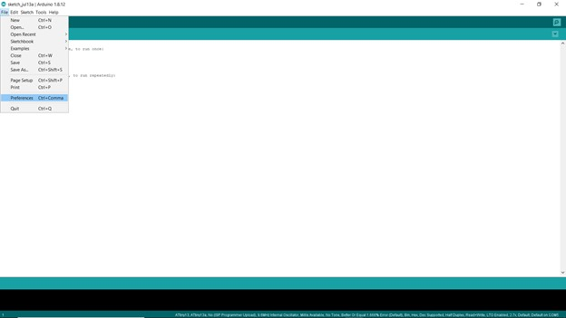
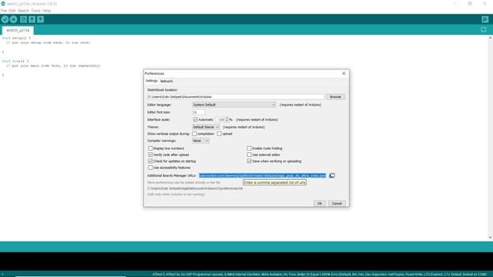
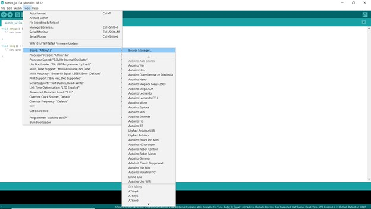
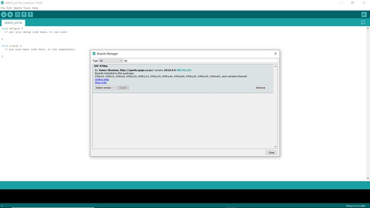
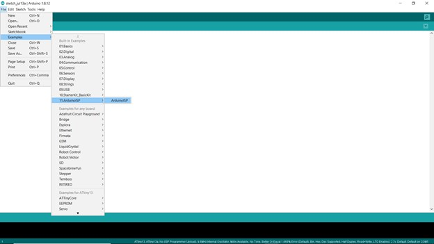
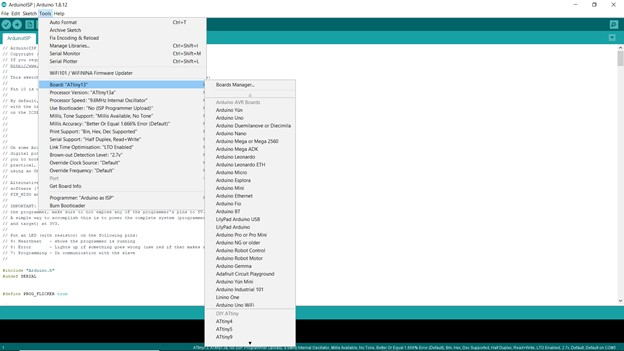
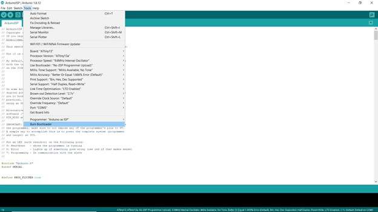
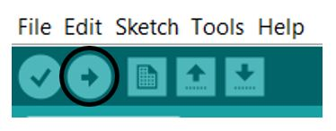

ATtiny13 berguna untuk proyek kecil yang tidak memerlukan mikrokontroller dengan memori yang besar dan ATtiny13 juga memiliki harga yg jauh lebih murah dari pada keluaran ATMEL yang lain. Masalah utama penggunaan ATtiny13 adalah tutorial yang sangat ketinggalan jaman dan kurangnya informasi, dibutuhkan waktu yang lebih baik dalam sehari untuk mengetahui bagaimana memprogramnya dengan Arduino IDE. Untuk memperbaiki kekurangan informasi ini, saya akan menunjukkan kepada Anda bagaimana memprogram ATtiny13 atau ATtiny13a Anda dengan Arduino IDE. Berikut adalah cara memprogram ATtiny13:
1. Add Library Board:
Dengan cara pilih File kemudia ambil Preferences. Seperti gambar berikut:

Kemudian tambahkan link berikut: Visit GitHub
Seperti pada gambar berikut:

Kemudian klik OK.
2. Install Board Attiny 13A
Pertama adalah pilih menu Tools, kemudian pilih Board, dan kemudian pilih Board Manager.

Setelah itu pilih board manager ketik DIY dan kemudian pilih DIY ATtiny.

3. Memulai Pemrograman
Pertama memilih menu File, keumdianpilih Examples, dan kemudian ArduinoISP.

Setelah program ArduinoISP muncul, set Board sebagai berikut:

Catatan: sesuaikan dengan gambar yaa dan jangan lupa set Programmer pada Arduino as ISP. Memilih Port Arduino Uno yg aktif, lalu klik Burning Bootloader untuk membakar kode program ISP.

Catatan: Pilih port yang aktif. Disini port yang aktif adalah COM5.
4. Rangkaian Uploader Attiny 13A dengan Arduino Uno
Rangkailah rangkaian berikut ini:

5. Program Attiny 13A dengan LED dan Push Button
Buatlah program seperti berikut ini:
#define OK 1 //pin push button Up pada attiny
#define relay 4 //pin relay pada attiny
#define led 0 //pin led pada attiny
int a = 0;
void setup()
{
pinMode(OK, INPUT_PULLUP);
pinMode(relay, OUTPUT);
pinMode(led, OUTPUT);
}
void loop()
{
if(digitalRead(OK) == LOW && a==0)
{
delay(50);
while(digitalRead(OK) == LOW){}
digitalWrite(relay, HIGH);
digitalWrite(led, HIGH);
a=1;
}
else if(digitalRead(OK) == LOW && a ==1)
{
delay(50);
while(digitalRead(OK) == LOW){}
digitalWrite(relay, LOW);
digitalWrite(led, LOW);
a=0;
}
}
Program diatas adalah penggunaan Attiny 13A sebagai pengontrol LED yang dapat dinyalakan dengan Push Button.
6. Upload Program
Upload program dengan memilih ikon upload seperti pada gambar seperti berikut:

Tunggu proses upload selesai hingga keterangan Done Upload muncul
7. Rangkian Attiny 13A dengan LED dan Push Button
Rangkailah rangkaian berikut:

Hidupkan power arduino dan Attiny 13A sudah bisa digunakan. Catatan: Rangkaian diatas ATtiny 13A hanya mengambil power dari Arduino Uno.
Have Fun!!!